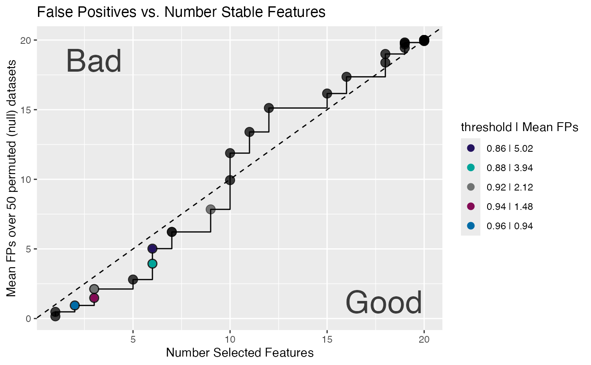
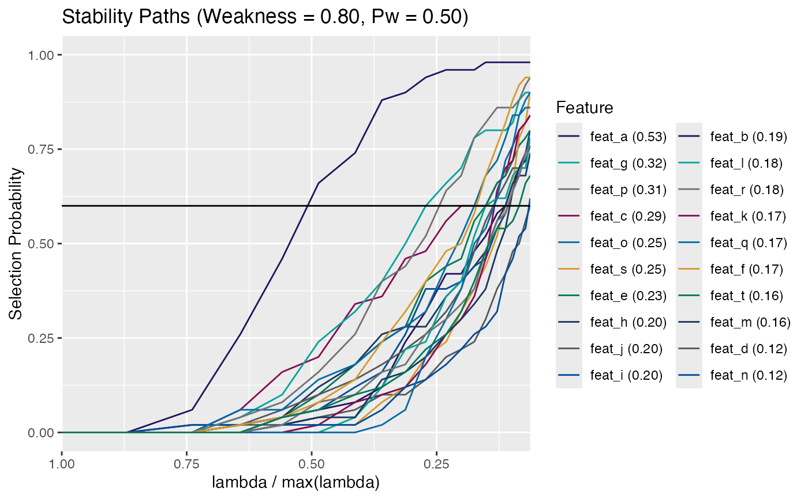

Calculate Empirical Number of False Positives
calc_emp_fdr.RdCalculate the mean number of false positive features from
a permutation analysis performed during a stability selection
run. This assumes a permutation set was generated during
stability selection, (i.e. n_perm > 0).
Arguments
- x
A
stab_selclass object generated viastability_selection().- thresh_seq
numeric(n). A sequence in[0, 1]specifying the thresholds. Seethreshinget_stable_features()- warn
logical(1). Should warnings be triggered if mean of< 5permutations is being returned?- fdr_breaks
numeric(n). A vector specifying the desired mean number of empirical false positives at which to calculate various thresholds.numeric(n). A vector specifying the- ...
Additional arguments passed to either
calc_emp_fdr_breaks()(i.e.thresh_seqandfdr_breaks) orplot.stab_sel().- which
integer(1). Which of the null hypothesis permuted stability paths to plot.
Value
A named vector indicating the average number
(counts) of false positive features selected at the
various thresholds specified by thresh_seq.
For calc_emp_fdr_breaks(), a list containing:
- n_selected
A vector of the number of features selected at each empirical stability selection threshold
- meanFPs
A vector of the mean number of false positive selected features at each empirical stability selection threshold
- breaks
A
tibbleof containing empirical false positive summary statistics at each FDR specified break point
Functions
calc_emp_fdr_breaks(): Calculates the stability selection threshold, the mean number of false positive selected features (empirical), and the number of selected features for specified FDR break points. Relies oncalc_emp_fdr()to calculate the mean false discovery based on permutations during the stability selection algorithm.plot_emp_fdr(): plots the mean number of false positives (FPs) versus the numberof selected features by a sequence of selection probability thresholds. For this to be possible, thestab_selobject must have permuted data in order to calculate empirical false discovery rates. The area in the sub-diagonal represents where more features are added without a commensurate increase in false positives (Good). The inverse is true for the super-diagonal, false positives are being included faster than additional features (Bad). The legend highlights pre-defined empirical FDR breaks:c(0.5, 1, 2, 3, 5)evaluated to the nearest threshold cutoff.plot_permuted_data(): Plot the permutation paths for astab_selobject. These paths are the stability selection paths of thenclass scrambled permutations, i.e. the null.
Examples
n_feat <- 20
n_samples <- 100
x <- matrix(rnorm(n_feat * n_samples), n_samples, n_feat)
colnames(x) <- paste0("feat", "_", head(letters, n_feat))
y <- sample(1:2, n_samples, replace = TRUE)
ss <- stability_selection(x, y, n_iter = 25, n_perm = 50,
r_seed = 101, parallel = TRUE)
#> ✓ Using kernel: 'binomial' and 1 core (serial)
#> ✓ Stablity path run time: 0.158
#> ✓ Perm path run time: 3.875
calc_emp_fdr(ss, seq(0.5, 0.9, 0.1))
#> thresh_0.5 thresh_0.6 thresh_0.7 thresh_0.8 thresh_0.9
#> 20.00 19.82 17.36 9.94 2.80
# calculate the FDR break points
calc_emp_fdr_breaks(ss)
#> $fdr_data
#> # A tibble: 91 × 3
#> MeanFPs n_selected piThresh
#> <dbl> <int> <dbl>
#> 1 0.16 1 1
#> 2 0.16 1 0.99
#> 3 0.48 1 0.98
#> 4 0.48 1 0.97
#> 5 0.94 2 0.96
#> 6 0.94 2 0.95
#> 7 1.48 3 0.94
#> 8 1.48 3 0.93
#> 9 2.12 3 0.92
#> 10 2.12 3 0.91
#> # ℹ 81 more rows
#>
#> $breaks
#> # A tibble: 5 × 4
#> FDR_breaks MeanFPs n_selected piThresh
#> <dbl> <dbl> <int> <dbl>
#> 1 0.5 0.94 2 0.96
#> 2 1 1.48 3 0.94
#> 3 2 2.12 3 0.92
#> 4 3 3.94 6 0.88
#> 5 5 5.02 6 0.86
#>
# plot the FDR
plot_emp_fdr(ss) # typically set permutations > 75

# Plot the permuted data individually
plot_permuted_data(ss, 3L) # choose 3rd permutation
